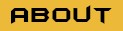

<!--
  Title: base-layout.component.html
  Author: Richard Krasso
  Contributor: Walter McCue
  Date: 03/19/23
  Description: html for the nodebucket project
-->

<div fxLayout="column">

  <!-- navigation -->
  <nav fxFlex>

    <mat-toolbar class="primary-color">

      <!-- Mobile Navbar -->
      <div class="mobile-toggle">
        <button mat-icon-button [matMenuTriggerFor]="navMenu" aria-label="Navigation Menu">
          <mat-icon>menu</mat-icon>
          <mat-menu #navMenu class="primary-color">
            <button class="navbar-link" routerLink="/" mat-button></button>
            <button class="navbar-link" routerLink="/about" mat-button></button>
            <button class="navbar-link" routerLink="/contact" mat-button></button>
          </mat-menu>
        </button>
      </div>

      <!-- Desktop Navbar -->
      <div fxFlex class="navbar-container">
        <button class="navbar-link" routerLink="/" mat-button></button>
        <button class="navbar-link" routerLink="/about" mat-button></button>
        <button class="navbar-link" routerLink="/contact" mat-button></button>
      </div>

      <div fxFlex></div>

      <!-- Logout -->
      <div>
        <button mat-icon-button [matMenuTriggerFor]="profileMenu" aria-label="User Profile menu">
          <mat-icon>perm_identity</mat-icon>
        </button>
        <mat-menu #profileMenu class="primary-color">
          <p style="padding: 10px; font-size: 16px; font-weight: bolder">Signed in as {{ sessionName }}</p>
          <button mat-menu-item (click)="logout()">
            <mat-icon>logout</mat-icon>
            <span style="font-size: 16px; font-weight: bolder">Log out</span>
          </button>
        </mat-menu>
      </div>

    </mat-toolbar>

  </nav>


  <!-- main content -->
  <div fxFlex>
    <main class="main-content" fxFlex="100%;">
      <router-outlet></router-outlet>
    </main>
  </div>

  <!-- footer -->
  <div fxFlex>
    <footer class="footer">
      <mat-toolbar class="footer-content primary-color">
        <p>
          &copy; {{year | date: 'yyyy'}} - nodebucket - <a href="https://www.bellevue.edu/" class="bu-link" target="_blank">Bellevue University</a>
        </p>
      </mat-toolbar>
    </footer>
  </div>
</div>
